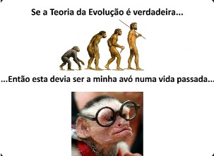
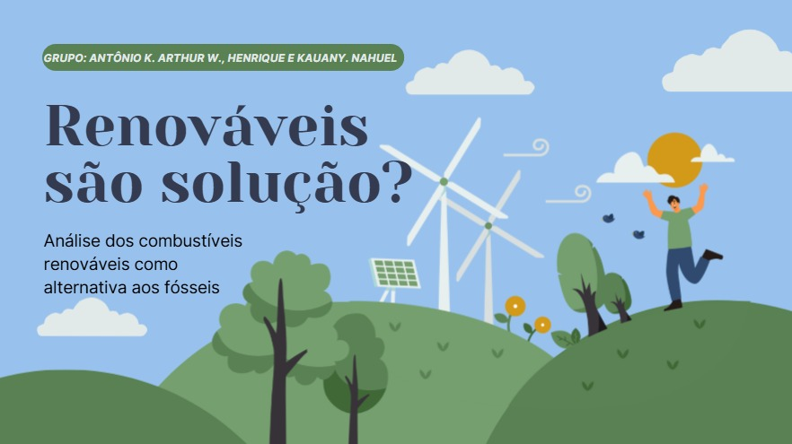
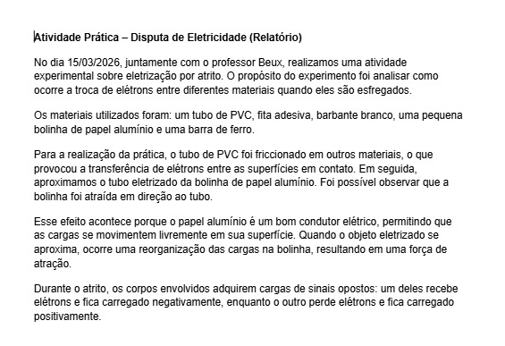
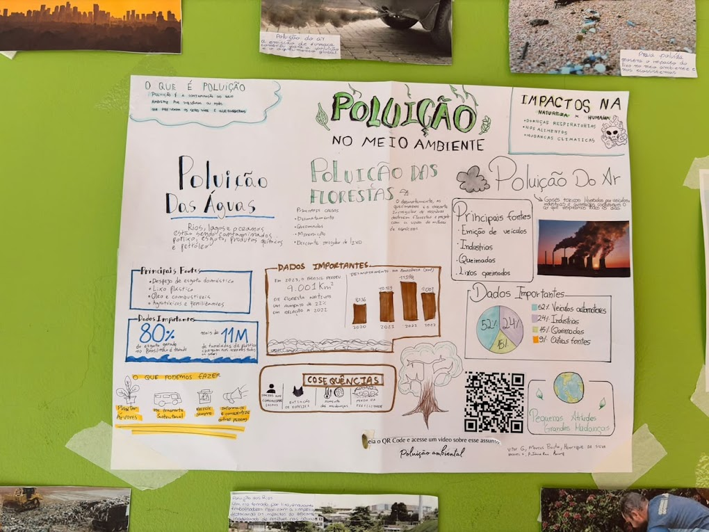
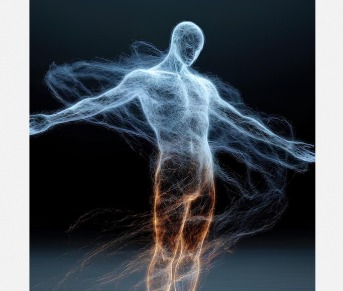
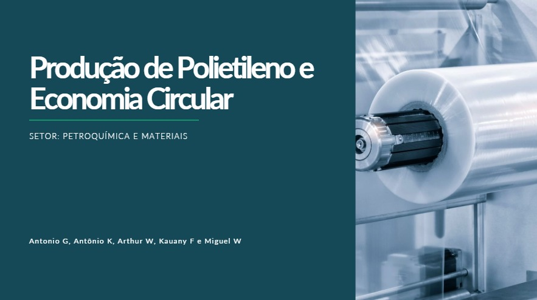
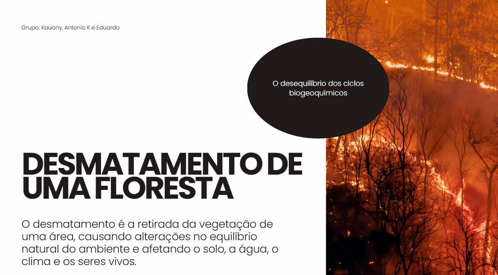

Exploramos as ideias evolucionistas e seus principais cientistas, analisando evidências biológicas e conceitos fundamentais da área. A aula integrou teoria e prática através de um simulador de seleção natural, unindo o rigor científico à criatividade na elaboração de memes temáticos. O aprendizado foi consolidado com a entrega de um relatório detalhado e atividades na plataforma Geekie.
C3 - Determinar os impactos das ações humanas nos ambientes, identificando suas causas e propondo soluções para a sua redução.
H15 - Comparar propostas de intervenção ambiental aplicando conhecimentos científicos e tecnológicos, observando os riscos e benefícios de sua implementação.
H18 - Identificar situações de risco ambiental na cidade onde reside.

Nesta semana, aplicamos os conceitos científicos das aulas anteriores nas apresentações sobre o problema dos combustíveis. O foco foi transformar a teoria em argumentação crítica, utilizando dados reais e exemplos práticos para defender um posicionamento em até 10 minutos. O objetivo foi demonstrar domínio técnico, clareza na comunicação e uma visão profunda sobre os impactos e soluções para a matriz energética atual.
C1 - Entender a ciência e a tecnologia como construções humanas.
C2 - Aplicar conceitos científicos para explicar fenômenos do cotidiano.
H9 - Compreender energia e suas transformações.
H11 - Investigar, levantar hipóteses e tirar conclusões.
H1 - Interpretar diferentes formas de informação (textos, gráficos, dados).

Na aula sobre eletrização por atrito, esfregamos um cano de PVC para gerar carga elétrica. O metal (papel alumínio) foi escolhido por ser condutor, permitindo o movimento das cargas. Ele foi atraído porque suas cargas se reorganizam (indução), não sendo repelido. O cano ficou eletrizado pelo atrito, ganhando ou perdendo elétrons. O outro material também se eletriza, e a quantidade de carga pode variar conforme o material usado.
C1 - Compreender as ciências naturais e as tecnologias como construções humanas associadas à cultura dos povos e suas visões de mundo.
H1 - Interpretar informações apresentadas em diferentes linguagens usadas nas Ciências, como texto discursivo, gráficos, tabelas, relações matemáticas, diagramas ou representação simbólica.
C2 - Aplicar os conceitos fundamentais e estruturas procedimentais das Ciências da Natureza na explicação de fenômenos cotidianos, bem como dominar processos e práticas da investigação científica.
H7 - Compreender os conceitos relacionados à Química nos seus diferentes ramos: Físico-química, Química orgânica e Química Geral.
H9 - Explicar os conceitos de energia, matéria, vida e transformação para explicar fenômenos naturais e procedimentos tecnológicos.
H11 - Empregar procedimentos e práticas de observação, levantamento de hipótese, experimentação, coleta de dados e conclusões para resolução de problemas relacionados às Ciências da Natureza.
H12 - Relacionar informações para construir modelos em ciência e tecnologia.

Nesta atividade, produzimos um painel científico interativo sobre a relação entre meio ambiente e saúde pública, sendo a minha parte focada na Poluição do Ar. Gostei bastante de organizar os dados em gráficos visuais e integrar o QR Code para tornar a exposição interativa para a comunidade escolar. O que menos gostei foi o processo manual de desenhar e ajustar as proporções das informações em um espaço físico limitado do cartaz.
C2 – Aplicar os conceitos fundamentais e estruturas procedimentais das Ciências da Natureza na explicação de fenômenos cotidianos, bem como dominar processos e práticas da investigação científica.
H11 – Empregar procedimentos e práticas de observação, coleta de dados e conclusões para resolução de problemas relacionados às Ciências da Natureza.
C3 – Determinar os impactos das ações humanas nos ambientes, identificando suas causas e propondo soluções para a sua redução.
H15 – Comparar propostas de intervenção ambiental aplicando conhecimentos científicos e tecnológicos, observando os riscos e benefícios de sua implementação.
H18 – Identificar situações de risco ambiental na cidade onde reside.
C4 – Compreender o funcionamento dos organismos vivos em geral e o ser humano em especial, considerando suas relações com o ambiente em que vivem, abordando aspectos físicos e socioculturais.
H23 – Formular propostas de alcance individual ou coletivo, utilizando como critérios a preservação e a promoção da saúde individual e coletiva.

Nesta atividade, elaboramos a cartilha "Eletricidade e o Corpo Humano", relacionando conceitos de corrente elétrica, prevenção de acidentes e medicina. Gostei muito de pesquisar como o corpo conduz eletricidade e como aparelhos como o desfibrilador usam essa energia para salvar vidas. O ponto mais desafiador foi sintetizar o conteúdo técnico em seções claras e visuais sem perder a precisão científica.
C1 – Compreender as ciências naturais e as tecnologias como construções humanas associadas à cultura dos povos e suas visões de mundo.
H3 – Inferir significado de termos técnico-científicos em textos de instrumentação ou de divulgação científica.
H4 – Identificar, em textos, diagramas, gráficos, imagens e tabelas, informações relevantes para compreender um fenômeno ou conceito relacionado às Ciências da Natureza.
C2 – Aplicar os conceitos fundamentais e estruturas procedimentais das Ciências da Natureza na explicação de fenômenos cotidianos, bem como dominar processos e práticas da investigação científica.
H12 – Relacionar informações para construir modelos em ciência e tecnologia.
C4 – Compreender o funcionamento dos organismos vivos em geral e o ser humano em especial, considerando suas relações com o ambiente em que vivem, abordando aspectos físicos e socioculturais.
H23 – Formular propostas de alcance individual ou coletivo, utilizando como critérios a preservação e a promoção da saúde individual e coletiva.

Durante a atividade, realizei uma pesquisa sobre a produção de polietileno e a economia circular, analisando a reação de polimerização, os cálculos estequiométricos, o rendimento industrial e os impactos ambientais. Também foram estudadas alternativas sustentáveis, como a reciclagem e o polietileno verde, relacionando a Química à indústria e à sustentabilidade.
C2 - Aplicar os conceitos fundamentais e estruturas procedimentais das Ciências da Natureza na explicação de fenômenos cotidianos, bem como dominar processos e práticas da investigação científica.
H6 - Compreender os conceitos relacionados à Física em seus diferentes ramos: Astronomia, Mecânica, Acústica, Óptica, Termologia, Calorimetria, Ondulatória, Eletricidade, Magnetismo e Física Moderna e Nuclear.
H7 - Compreender os conceitos relacionados à Química nos seus diferentes ramos: Físico-química, Química orgânica e Química Geral.
H9 - Explicar os conceitos de energia, matéria, vida e transformação para explicar fenômenos naturais e procedimentos tecnológicos.
Nesta atividade de Química Orgânica, investiguei a classificação dos carbonos e das cadeias carbônicas com foco no óleo essencial de manjericão. Analisei compostos como o linalol e o estragol, relacionando polaridade e insaturações com a volatilidade da planta. Compreendi como as propriedades físico-químicas das moléculas interferem diretamente no comportamento dos compostos durante a extração. Conectei a estrutura da matéria-prima orgânica com os processos de transformação e suas aplicações no cotidiano. Essa investigação me deu a base teórica necessária para realizarmos a nossa próxima etapa prática: a destilação do manjericão.
C5 - Determinar as características das tecnologias associadas às Ciências da Natureza aplicadas em diferentes serviços ou contextos produtivos: indústria, manufatura, agricultura, agroindústria, extrativismo.
H12 – Relacionar informações para construir modelos em Ciência e Tecnologia.
H24 – Descrever propriedades físicas, químicas e/ou biológicas dos materiais, relacionando-as às suas finalidades.
H25 – Identificar matérias-primas e etapas de transformação, descrevendo processos físicos, químicos e/ou biológicos.
Material da atividade: Acessar E-book
Relatório individual: Acessar relatório
Nesta atividade de Física, investiguei em dupla o funcionamento do detector de metais. Analisamos como a corrente elétrica em uma bobina gera campos magnéticos para detectar metais. Conectamos o princípio de indução eletromagnética às descobertas de Michael Faraday no século XIX. Sintetizamos a pesquisa e o esquema ilustrado em um infográfico visual. Compreendi na prática como o eletromagnetismo é aplicado em tecnologias do nosso dia a dia.
C5 - Determinar as características das tecnologias associadas às Ciências da Natureza aplicadas em diferentes serviços ou contextos produtivos: indústria, manufatura, agricultura, agroindústria, extrativismo.
H26 - Utilizar manuais para conhecer os processos de instalação e operação de diferentes equipamentos.
H27 – Executar testes de controle para a comparação de serviços, materiais e produtos, utilizando parâmetros como custo e eficiência, empregabilidade, efeito colateral, riscos e benefícios.
H28 - Reconhecer e utilizar nomenclatura e códigos científicos e tecnológicos para caracterizar materiais, substâncias e processos.

Atividade realizada em trio para analisar o impacto do desmatamento nos ciclos do carbono, água, nitrogênio e fósforo. Em formato de apresentação, investigamos as causas do desequilíbrio, consequências ambientais, soluções e ações sustentáveis. Por fim, documentamos o caso real do desmatamento na Amazônia Legal (2022) com dados do PRODES/INPE.
C1 - Compreender as ciências naturais e as tecnologias como construções humanas associadas à cultura dos povos e suas visões de mundo.
H4 - Identificar, em textos, diagramas, gráficos, imagens e tabelas, informações relevantes para compreender um fenômeno ou conceito relacionado às Ciências da Natureza.
C2 – Aplicar os conceitos fundamentais e estruturas procedimentais das Ciências da Natureza na explicação de fenômenos cotidianos, bem como dominar processos e práticas da investigação científica.
H11 - Empregar procedimentos e práticas de observação, levantamento de hipótese, experimentação, coleta de dados e conclusões para resolução de problemas relacionados às Ciências da Natureza.
C5 – Determinar as características das tecnologias associadas às Ciências da Natureza aplicadas em diferentes serviços ou contextos.
H24 - Descrever as propriedades físicas, químicas e/ou biológicas dos materiais relacionando-os às finalidades as quais que se destinam.